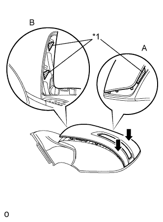
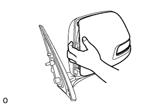

НАРУЖНОЕ ЗЕРКАЛО ЗАДНЕГО ВИДА > ПОВТОРНАЯ СБОРКА |
| 1. УСТАНОВИТЕ БОКОВУЮ ТЕЛЕКАМЕРУ В СБОРЕ (для моделей с монитором бокового обзора) |
Установите боковую телекамеру в сборе (Нажмите здесь).
| 2. УСТАНОВИТЕ МЕХАНИЗМ ОТВОДА ЛЕВОГО НАРУЖНОГО ЗЕРКАЛА |
Введите в зацепление 6 захватов, чтобы закрепить 2 опоры пружины, а затем вверните 2 винта.
Зацепите захват, чтобы закрепить фиксатор провода.
Установите привод в сборе.
Зацепите 2 захвата, чтобы подсоединить разъем нового жгута проводов в сборе.
Установите привод в сборе и закрепите его 3 винтами.
Установите жгут проводов в сборе.
Пропустите жгут проводов через отверстие в верхней части опоры в направлении, обозначенном стрелкой на рисунке.
Подсоедините разъем и сдвиньте крышку, как показано на рисунке.
Установите корпус.
Проденьте жгут проводов через отверстие в корпусе крышки.
Закрепите захват, как показано на рисунке, чтобы закрепить крышку корпуса на опоре.
Присоедините корпус наружного зеркала, как показано на рисунке.
Закрепите корпус наружного зеркала 5 винтами.
Для моделей с монитором бокового обзора:
Подсоедините разъем боковой телекамеры в сборе к жгуту проводов и установите разъем на фиксатор провода.
Установите основание крышки.
Проденьте жгут проводов через отверстие в основании крышки.
С помощью торцевого ключа с головкой "TORX" T25 закрепите основание крышки 3 новыми винтами.
Введите в зацепление 6 захватов и установите нижнюю крышку зеркала.
Установите прокладку левого наружного зеркала заднего вида.
Проденьте жгут проводов через новую прокладку левого наружного зеркала заднего вида.
 |
Введите в зацепление 5 захватов, чтобы закрепить левое наружное зеркало заднего вида.
Вверните винт.
Совместите метку жгута проводов в сборе с концом выступа прокладки левого наружного зеркала заднего вида, в которую вставлен жгут проводов, а затем закрепите жгут проводов и зажим с помощью ленты, как показано на рисунке.
| *1 | Зажим |
| *2 | Лента |
| *a | Метка |
| *b | 50 мм |
| *a | Перекрытие 30 мм |
| *b | 50 мм |
Для моделей с монитором бокового обзора:
Соберите разъем.
Переместите держатель в положение разблокировки.
| *1 | Штырь жгута проводов | *2 | Вид разъема сзади |
| *3 | Положение разблокировки держателя | *4 | Положение блокировки держателя |
Вставьте штыри жгута проводов в сборе с задней стороны нового разъема таким образом, чтобы они зафиксировались.
| 1 | 2 | 3 | 4 | 5 | 6 | 7 |
| Вишневый | - | Голубой | Черный/зеленый | Зеленый | Желтый | Белый |
| 8 | 9 | 10 | 11 | 12 | 13 | 14 |
| Коричневый | Красный | Желто-зеленый | Черный/зеленый | Черный | Синий | Розовый |
Переместите держатель в положение блокировки.
Установите новый лист пластика в месте, показанном на рисунке.
Для моделей без монитора бокового обзора:
Соберите разъем.
Оберните длинный жгут проводов вокруг короткого, как показано в части 1 рисунка, чтобы они имели одинаковую длину.
Введите в зацепление 4 захвата, чтобы подсоединить 2 разъема к переходнику.
| *1 | Разъем | *2 | Переходник |
| *3 | Захват | - | - |
| 3. УСТАНОВИТЕ ЛЕВЫЙ ПОВТОРИТЕЛЬ УКАЗАТЕЛЯ ПОВОРОТА В СБОРЕ |
Подсоедините разъем.
Установите лампу и закрепите ее 3 винтами.
| 4. УСТАНОВИТЕ КРЫШКУ ЛЕВОГО НАРУЖНОГО ЗЕРКАЛА |
Установите крышку наружного зеркала.
 |
Вставьте ребро жесткости на наружной кромке крышки в канавку корпуса зеркала.
| *1 | Ребро |
|  |
Убедитесь, что крышка и корпус зеркала правильно совмещены, а затем нажмите на наружный конец крышки, чтобы ввести в зацепление наружные захваты.
| *1 | Ребро |
|  |
Убедившись в том, что ребро крышки должным образом входит в канавку корпуса зеркала, сожмите внутренний конец крышки и корпус зеркала, чтобы ввести в зацепление внутренние захваты.
 |
Нажмите на крышку в местах расположения 8 захватов, чтобы обеспечить правильное зацепление.
| 5. УСТАНОВИТЕ СТЕКЛО НАРУЖНОГО ЗЕРКАЛА ЗАДНЕГО ВИДА |
Для моделей с обогревателем зеркала:
Подсоедините 2 разъема.
 |
Введите в зацепление 4 захвата, чтобы установить стекло зеркала.